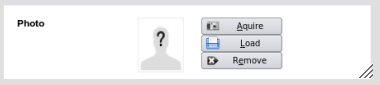
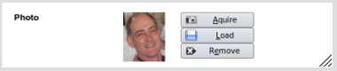

In many sections of EasyGP including the contacts modules for patients and staff, it is possible add a photo to
the database. The screen images here are the same for both these sections named above.
By default no image exists and a placeholder will always be shown.

Aquire This feature is not yet implemented
Remove If you have previously loaded a patient's photo and wish to remove it the photo picturebox will be reset.

Load Clicking this will present you with a file dialog to load an existing photograph
Note as with all information within an editing area, it will not be saved until the Save Button (F12) is clicked in the relevant section.